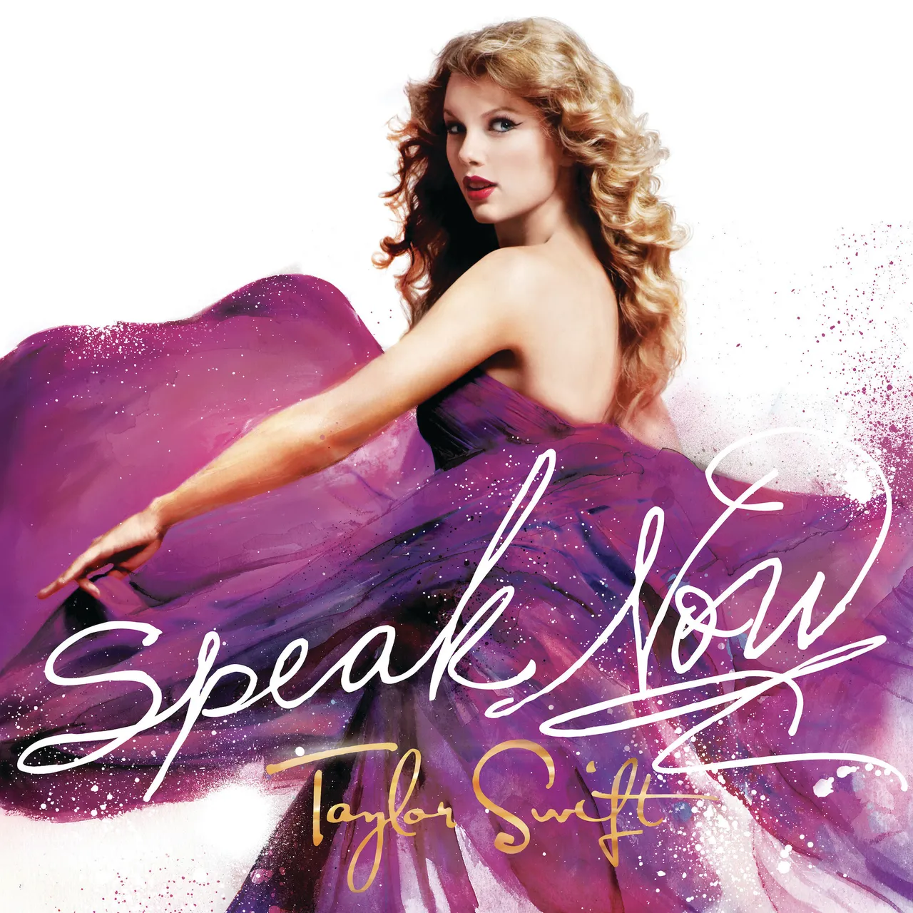
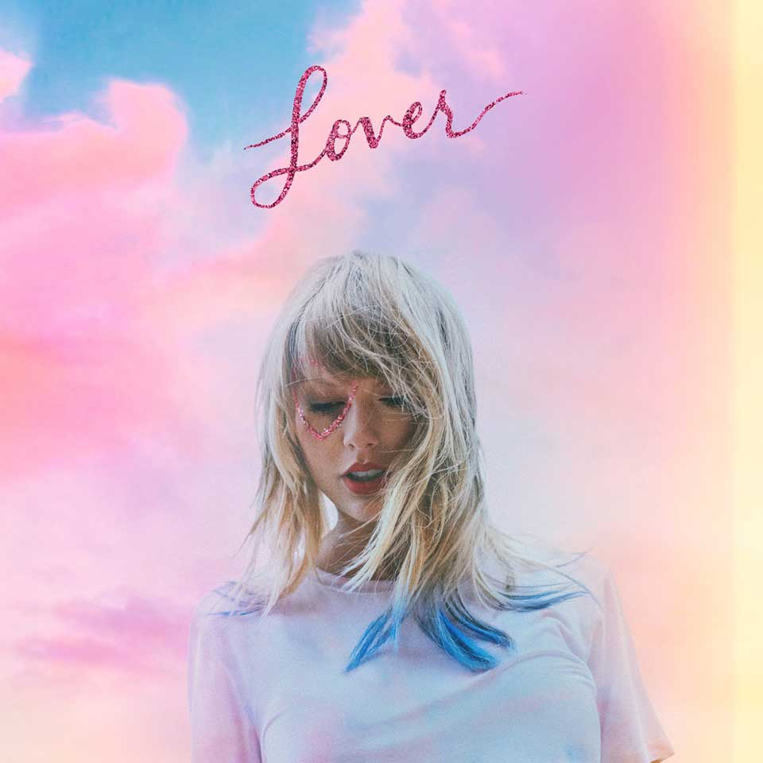
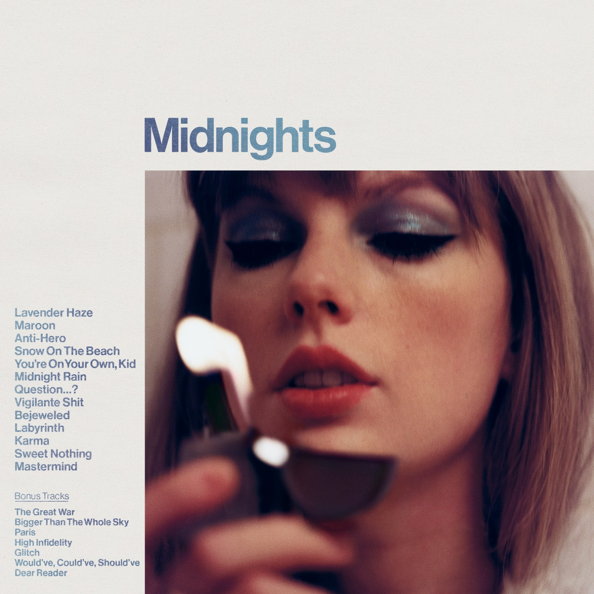

- Tim McGraw
- Picture To Burn
- Teardrops On My Guitar
- A Place in this World
- Cold As You
- The Outside
- Tied Together with a Smile
Taylor Swift

- Stay Beautiful
- Should’ve Said No
- Mary’s Song
- Our Song
- I’m Only Me When I’m With You
- Invisible
- A Perfect Good Heart
- Mine
- Sparks Fly
- Back To December
- Speak Now
- Dear John
- Mean
- The Story Of Us
Speak Now

- Never Grow Up
- Enchanted
- Better Than Revenge
- Innocent
- Haunted
- Last Kiss
- Long Live
- Welcome To New York
- Blank Space
- Style
- Out Of The Woods
- All You Had To Do Was Stay
- Shake It Off
- I Wish You Would
- Bad Blood
1989

- Wildest Dreams
- How You Get The Girl
- This Love
- I Know Places
- Clean
- Wonderland
- You Are In Love
- New Romantics
- ...Ready For It?
- I Did Something Bad
- Don’t Blame Me
- Delicate
- Look What You Made Me Do
- So It Goes...
- Gorgeous
Reputation

- Getaway Car
- King Of My Heart
- Dancing With Our Hands Tied
- Dress
- End Game
- Call It What You Want
- New Year’s Day
- Cruel Summer
- Lover
- The Man
- The Archer
- I Think He Knows
- Miss Americana & The Heartbreak Prince
- Paper Rings
- Cornelia Street
Lover

- Death By A Thousand Cuts
- London Boy
- Soon You’ll Get Better
- You Need To Calm Down
- Afterglow
- ME!
- It’s Nice To Have A Friend
- Daylight
- the 1
- cardigan
- the last great american dynasty
- exile
- my tears ricochet
- mirrorball
- seven
- august
Folklore
- this is me trying
- illicit affairs
- invisible string
- mad woman
- epiphany
- betty
- peace
- hoax
- willow
- champagne problems
- gold rush
- ’tis the damn season
- tolerate it
- no body, no crime
- happiness
- dorothea
Evermore

- coney island
- ivy
- cowboy like me
- long story short
- marjorie
- closure
- evermore
- right where you left me
- Fearless
- Fifteen
- Love Story
- White Horse
- You Belong With Me
- Breathe
- Tell Me Why
- You’re Not Sorry
Fearless (Taylor's Version)

- The Way I Loved You
- Forever & Always
- The Best Day
- Change
- The Other Side Of The Door
- You All Over Me
- Mr. Perfectly Fine
- We Were Happy
- State Of Grace
- Red
- Treacherous
- I Knew You Were Trouble
- All Too Well
- 22
- I Almost Do
- We Are Never Ever Getting Back Together
- Stay Stay Stay
- The Last Time
Red (Taylor's Version)

- Holy Ground
- Sad Beautiful Tragic
- The Lucky One
- Everything Has Changed
- The Moment I Knew
- Come back... Be Here
- Girl At Home
- Babe
- The Very First Night
- All Too Well (10 Minute Version)
- Lavender Haze
- Maroon
- Anti-Hero
- Snow On The Beach
- You’re On Your Own, Kid
- Midnight Rain
- Question...?
- Vigilante Shit
Midnights

- Bejeweled
- Labyrinth
- Karma
- Sweet Nothing
- Mastermind
- The Great War
- High Infidelity
- Would’ve, Could’ve, Should’ve